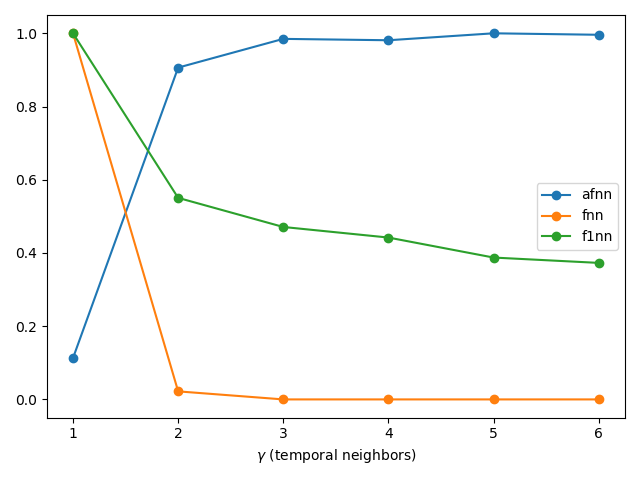

Estimating Delay Embedding Parameters
The following functions can estimate good values that can be used in reconstruct for either the delay time or the number of temporal neighbors.
Delay Time
DelayEmbeddings.estimate_delay — Functionestimate_delay(s, method::String [, τs = 1:2:100]; kwargs...) -> τEstimate an optimal delay to be used in reconstruct or embed. The method can be one of the following:
"ac_zero": first delay at which the auto-correlation function becomes <0."ac_min": delay of first minimum of the auto-correlation function."mi_min": delay of first minimum of mutual information ofswith itself (shifted for variousτs). Keywordsnbins, binwidthare propagated intomutualinformation."exp_decay":exponential_decay_fitof the correlation function rounded to an integer (uses least squares onc(t) = exp(-t/τ)to findτ)."exp_extrema": same as above but the exponential fit is done to the absolute value of the local extrema of the correlation function.
Both the mutual information and correlation function (autocor) are computed only for delays τs. This means that the min methods can never return the first value of τs!
The method mi_min is significantly more accurate than the others and also returns good results for most timeseries. It is however the slowest method (but still quite fast!).
DelayEmbeddings.exponential_decay_fit — Functionexponential_decay_fit(x, y, weight = :equal) -> τPerform a least square fit of the form y = exp(-x/τ) and return τ. Taken from: http://mathworld.wolfram.com/LeastSquaresFittingExponential.html. Assumes equal lengths of x, y and that y ≥ 0.
To use the method that gives more weight to small values of y, use weight = :small.
Mutual Information
DelayEmbeddings.mutualinformation — Functionmutualinformation(s, τs[; nbins, binwidth])Calculate the mutual information between the time series s and its images delayed by τ points for τ ∈ τs, using an improvement of the method outlined by Fraser & Swinney in [1].
Description
The joint space of s and its τ-delayed image (sτ) is partitioned as a rectangular grid, and the mutual information is computed from the joint and marginal frequencies of s and sτ in the grid as defined in [1]. The mutual information values are returned in a vector of the same length as τs.
If any of the optional keyword parameters is given, the grid will be a homogeneous partition of the space where s and sτ are defined. The margins of that partition will be divided in a number of bins equal to nbins, such that the width of each bin will be binwidth, and the range of nonzero values of s will be in the centre. If only of those two parameters is given, the other will be automatically calculated to adjust the size of the grid to the area where s and sτ are nonzero.
If no parameter is given, the space will be partitioned by a recursive bisection algorithm based on the method given in [1].
Notice that the recursive method of [1] evaluates the joint frequencies of s and sτ in each cell resulting from a partition, and stops when the data points are uniformly distributed across the sub-partitions of the following levels. For performance and stability reasons, the automatic partition method implemented in this function is only used to divide the axes of the grid, using the marginal frequencies of s.
References
[1]: Fraser A.M. & Swinney H.L. "Independent coordinates for strange attractors from mutual information" Phys. Rev. A 33(2), 1986, 1134:1140.
Besides the above method, there also exists code that computes mutual information in two other ways. Both ways are in the file DelayEmbedding\src\old_mutual_info.jl. The first way is the original algorithm of Fraser, while the second is the algorithm of Kraskov. Both of these implementations are inferior to the one exposed here (performance-wise).
Embedding Dimension
DelayEmbeddings.estimate_dimension — Functionestimate_dimension(s::AbstractVector, τ::Int, γs = 1:5, method = "afnn"; kwargs...)Compute a quantity that can estimate an optimal amount of temporal neighbors γ to be used in reconstruct or embed.
Description
Given the scalar timeseries s and the embedding delay τ compute a quantity for each γ ∈ γs based on the "nearest neighbors" in the embedded time series.
The quantity that is calculated depends on the algorithm defined by the string method:
"afnn"(default) is Cao's "Averaged False Nearest Neighbors" method [1], which gives a ratio of distances between nearest neighbors. This ratio saturates around1.0near the optimal value ofγ(seeafnn)."fnn"is Kennel's "False Nearest Neighbors" method [2], which gives the number of points that cease to be "nearest neighbors" when the dimension increases. This number drops down to zero near the optimal value ofγ. This method accepts the keyword argumentsrtolandatol, which stand for the "tolerances" required by Kennel's algorithm (seefnn)."f1nn"is Krakovská's "False First Nearest Neighbors" method [3], which gives the ratio of pairs of points that cease to be "nearest neighbors" when the dimension increases. This number drops down to zero near the optimal value ofγ(seef1nn).
"afnn" and "f1nn" also support the metric keyword, which can be any of Cityblock(), Euclidean(), Chebyshev(). This metric is used both for computing the nearest neighbors (KDTrees) as well as the distances necessary for Cao's method (eqs. (2, 3) of [1]). Defaults to Euclidean() (note that [1] used Chebyshev).
Please be aware that in DynamicalSystems.jl γ stands for the amount of temporal neighbors and not the embedding dimension (D = γ + 1, see also embed).
References
[1] : Liangyue Cao, Physica D, pp. 43-50 (1997)
[2] : M. Kennel et al., Phys. Review A 45(6), 3403-3411 (1992).
[3] : Anna Krakovská et al., J. Complex Sys. 932750 (2015)
Example
using DynamicalSystems, PyPlot
ds = Systems.roessler()
tr = trajectory(ds, 1000.0; dt = 0.05)
τ = estimate_delay(tr[:, 1], "mi_min") # first minimum of mutual information
figure();
for method in ["afnn", "fnn", "f1nn"]
Ds = estimate_dimension(tr[:, 1], τ, 1:6, method)
plot(1:6, Ds ./ maximum(Ds), label = method, marker = "o")
end
legend(); xlabel("\$\\gamma\$ (temporal neighbors)")
tight_layout()
Functions
DelayEmbeddings.fnn — Functionfnn(s::AbstractVector, τ:Int, γs = 1:5; rtol=10.0, atol=2.0)Calculate the number of "false nearest neighbors" (FNN) of the datasets created from s with a sequence of τ-delayed temporal neighbors.
Description
Given a dataset made by embedding s with γ temporal neighbors and delay τ, the "false nearest neighbors" (FNN) are the pairs of points that are nearest to each other at dimension γ, but are separated at dimension γ+1. Kennel's criteria for detecting FNN are based on a threshold for the relative increment of the distance between the nearest neighbors (rtol, eq. 4 in [1]), and another threshold for the ratio between the increased distance and the "size of the attractor" (atol, eq. 5 in [1]). These thresholds are given as keyword arguments.
The returned value is a vector with the number of FNN for each γ ∈ γs. The optimal value for γ is found at the point where the number of FNN approaches zero.
See also: estimate_dimension, afnn, f1nn.
References
[1] : M. Kennel et al., "Determining embedding dimension for phase-space reconstruction using a geometrical construction", Phys. Review A 45(6), 3403-3411 (1992).
DelayEmbeddings.afnn — Functionafnn(s::AbstractVector, τ:Int, γs = 1:5, metric=Euclidean())Compute the parameter E₁ of Cao's "averaged false nearest neighbors" method for determining the minimum embedding dimension of the time series s, with a sequence of τ-delayed temporal neighbors [1].
Description
Given the scalar timeseries s and the embedding delay τ compute the values of E₁ for each γ ∈ γs, according to Cao's Method (eq. 3 of [1]).
This quantity is a ratio of the averaged distances between the nearest neighbors of the reconstructed time series, which quantifies the increment of those distances when the number of temporal neighbors changes from γ to γ+1.
Return the vector of all computed E₁s. To estimate a good value for γ from this, find γ for which the value E₁ saturates at some value around 1.
Note: This method does not work for datasets with perfectly periodic signals.
See also: estimate_dimension, fnn, f1nn.
References
[1] : Liangyue Cao, Physica D, pp. 43-50 (1997)
DelayEmbeddings.f1nn — Functionf1nn(s::AbstractVector, τ:Int, γs = 1:5, metric = Euclidean())Calculate the ratio of "false first nearest neighbors" (FFNN) of the datasets created from s with a sequence of τ-delayed temporal neighbors.
Description
Given a dataset made by embedding s with γ temporal neighbors and delay τ, the "first nearest neighbors" (FFNN) are the pairs of points that are nearest to each other at dimension γ that cease to be nearest neighbors at dimension γ+1 [1].
The returned value is a vector with the ratio between the number of FFNN and the number of points in the dataset for each γ ∈ γs. The optimal value for γ is found at the point where this ratio approaches zero.
See also: estimate_dimension, afnn, fnn.
References
[1] : Anna Krakovská et al., "Use of false nearest neighbours for selecting variables and embedding parameters for state space reconstruction", J Complex Sys 932750 (2015), DOI: 10.1155/2015/932750
DelayEmbeddings.stochastic_indicator — Functionstochastic_indicator(s::AbstractVector, τ:Int, γs = 1:4) -> E₂sCompute an estimator for apparent randomness in a reconstruction with γs temporal neighbors.
Description
Given the scalar timeseries s and the embedding delay τ compute the values of E₂ for each γ ∈ γs, according to Cao's Method (eq. 5 of [1]).
Use this function to confirm that the input signal is not random and validate the results of estimate_dimension. In the case of random signals, it should be E₂ ≈ 1 ∀ γ.
References
[1] : Liangyue Cao, Physica D, pp. 43-50 (1997)